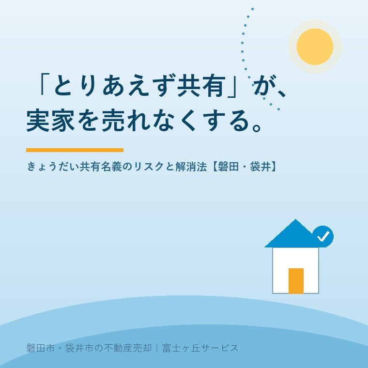

2026年7月22日｜カテゴリ：相続・共有名義・実家じまい

この記事の要点
Q. 実家をきょうだいみんなの共有名義で相続しようと思う。あとで困ることはある？
A. 共有名義の不動産は、売却するとき共有者全員の同意が必要で、1人でも反対したり連絡が取れなくなったりすると動かせなくなります。さらに代替わりのたびに共有者が増えていくため、「とりあえず共有」は将来の売却を難しくする分け方です。磐田市・袋井市では、こうした「売りにくくなりそうな実家」を、介護施設の運営から不動産事業を始めた富士ヶ丘サービスのような「介護×不動産」専門の会社に、分け方の段階から相談するという選択肢があります。
お盆の帰省で実家の今後が話題になったとき、よく出てくるのが「とりあえず、きょうだいみんなの名義にしておこうか」という案です。誰か1人のものにすると角が立つし、売るかどうかもまだ決められない──その場を丸くおさめるには、たしかに一番ラクな結論に見えます。ただ、不動産の実務では、この「とりあえず共有」が10年後・20年後に一番重い宿題になって返ってくることが少なくありません。今日は、共有名義の実家で何が起きるのか、そしてどう避け、どう解消すればよいのかを整理します。
共有名義とは、1つの不動産を複数人が持分（たとえば3人きょうだいで3分の1ずつ）で所有する状態です。民法は、共有物にどこまで手を加えられるかを、行為の重さごとに次のように分けています。
| 行為 | 例 | 必要な同意 |
|---|---|---|
| 保存行為 | 雨漏りの修繕、草刈りなど現状維持 | 共有者の1人が単独でできる |
| 管理行為 | 短期の賃貸、軽微な変更など | 持分の過半数 |
| 変更・処分行為 | 売却、取り壊し、大規模な改修 | 共有者全員の同意（民法251条） |
ポイントは、実家を売る・壊すという一番大事な出口が「全員同意」になっていることです。持分がわずかな共有者が1人反対しただけでも、あるいは反対ではなく単に音信不通になっただけでも、実家全体の売却は止まります。「みんな仲がいいから大丈夫」で始まった共有が、結婚・転居・疎遠・認知症・死亡といった年月の変化で動かせなくなっていく──これが共有名義の一番の怖さです。
もう1つの問題は、共有が時間とともに悪化していくことです。きょうだい3人の共有で始まっても、誰かが亡くなればその持分はさらにその配偶者や子へ相続され、共有者は甥・姪、いとこへと広がっていきます。2代進むころには「会ったこともない親戚10人以上の共有」という状態も珍しくなく、こうなると全員の同意はもちろん、全員の連絡先をそろえることさえ大仕事になります。
また、共有持分は各自の財産なので、自分の持分だけを第三者に売ることは法律上可能です。実際、持分だけを買い取る業者も存在します。ただし持分だけでは家を使えないため買値は安くなりがちで、何より、家族の共有の中に見知らぬ第三者が入ってくることで、残った共有者との関係が一気に難しくなります。「誰かが持分を売ってしまうかもしれない」状態そのものが、共有の不安定さだと言えます。
所有者不明土地の問題を受けて、2023年4月に施行された民法改正で、共有の出口は少し広がりました。たとえば、必要な調査をしても所在が分からない共有者（所在等不明共有者）がいる場合、裁判所の決定を得て、その人以外の共有者全員の同意で変更行為ができる制度や、相続開始から10年が経過していれば、裁判所の関与のもとで所在等不明共有者の持分を取得したり、その持分も含めて不動産全体を売却したりできる制度が新設されています。また、共有状態を裁判で解消する共有物分割についても、1人が不動産を取得して他の共有者に代金を支払う「全面的価格賠償」の方法が明文化されました。
ただし、これらはいずれも裁判所への申立てが必要で、時間も費用も、そして家族の心労もかかります。「制度があるから共有でも何とかなる」ではなく、「制度を使わずに済むよう、最初から共有にしない」が実務の鉄則です。
磐田市・袋井市の実家は敷地が広く、宅地のほかに田畑や山林、複数の筆の土地をまとめて相続するケースが多くあります。遺産分割のとき、評価や分け方に迷う土地ほど「とりあえず共有」に流れやすく、結果として、宅地も農地も山も全部きょうだい共有──という形が生まれがちです。農地は売却に農地法の許可も絡むため（詳しくは田んぼ・畑・山林の相続の記事をご覧ください）、共有と農地の掛け算は「売りにくさ」を二重にします。
さらに、この地域では「実は祖父名義のまま」という家も少なくありません。相続登記は2024年4月から義務化されており、過去の相続分も原則2027年3月31日までに登記が必要です（相続登記の期限の記事参照）。放置された未登記の相続は、法定相続人全員の共有と同じ状態がすでに始まっているということでもあります。家族が顔をそろえるお盆は、名義と分け方を話し合う絶好の機会です。
これから相続を迎える場合は、次のような分け方で共有を避けられます。
すでに共有になっている実家も、あきらめる必要はありません。共有者どうしの話し合いで持分を1人に集める、全員同意で売却して代金を分ける、話し合いが難しければ共有物分割の手続きを検討する──段階に応じた道があります。大切なのは、共有者がこれ以上増えてしまう前に、動ける人がそろっているうちに手を付けることです。
共有名義の問題は、法律の話であると同時に、家族の話し合いの話です。富士ヶ丘サービスは、介護施設の運営から不動産事業を始めた会社として、介護・相続・不動産をひとつのテーブルでご相談いただけます。磐田市・袋井市に特化した地域密着だからこそ、田畑や山林を含む実家まるごとの分け方も、「高く売る」だけでなく「家族があとで困らない形」を一緒に考えます。相続の入口でお悩みの方は相続はじめ相談室もご利用ください。
ふじがおか実家カルテ｜分け方を決める前の状態確認に
共有名義・祖父名義のままの実家も、まず現状を1冊に。
登記情報と固定資産税通知書から、名義・共有者・農地・道路・境界を宅建士が机上で確認します。相続はじめ相談室・実家じまい相談室もあわせてご利用ください。
本記事は2026年7月22日時点の情報をもとに作成しています。遺産分割・共有物分割・登記の個別判断は、弁護士・司法書士・法務局へ、税務（代償分割・換価分割の課税関係など）は税理士・税務署へご確認ください。
磐田市・袋井市の実家じまい・相続空き家相談
固定資産税通知書だけでも相談できます
住所があいまいでも、通知書や写真から名義・道路・農地・残置物の確認順を整理します。カルテ申込またはLINEで状況を送ってください。
富士ヶ丘サービス株式会社／静岡県磐田市見付5789番地1／TEL:0538-31-3308／静岡県知事 (2) 第14083号／代表取締役・宅地建物取引士 大石 浩之